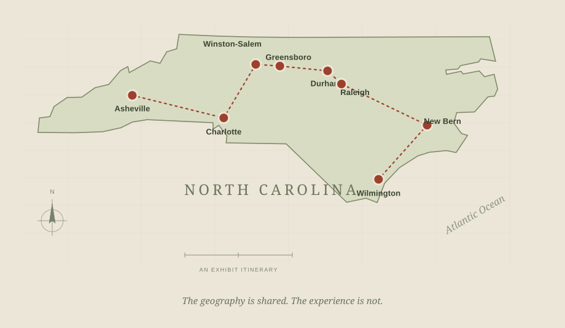

The invitation
Mainstream guides present scenery, history, attractions, and accommodations. Their descriptions suggest what a visitor should see—and which traveler the guide imagines.
North Carolina, 1939–1956
The same destination.
A different journey.
Eight places reveal how mainstream travel guides and the Green Book framed the freedom—and the limits—of travel in the Jim Crow South.
Explore the journey
What does a travel guide promise—and who can take that promise for granted?
Read the road through01 / Follow the evidence
Move from the mountains to the coast. At each stop, compare what the guides describe, what they list, and what the difference tells us.
Loading the interactive map…
02 / Reading between the lines
These publications describe the same state for different readers. Read their language, their omissions, and their practical advice together.
Mainstream guides present scenery, history, attractions, and accommodations. Their descriptions suggest what a visitor should see—and which traveler the guide imagines.
The Green Book identifies hotels, tourist homes, restaurants, and other services for Black travelers. An address is evidence of a network that helped make a trip possible.
A missing listing does not prove that a business excluded Black customers. A later listing does not establish when a business opened. Each comparison keeps those limits visible.
The 1939 guide and 1941 Green Book provide the closest comparison. The 1956 edition offers a later snapshot. City markers give geographic context; historical street addresses are preserved as printed and are not exact geocoded business locations.
See the source notes03 / The archive
The evidence is open to inspection. Follow each archive link to read the original document and check the printed page references.
Page references refer to the printed publication unless marked otherwise. Scans may use a different viewer page number. Original titles, racial terminology, and addresses are preserved in the scans; interpretation uses modern language.
The road is a record
A map tells us where.
A guide helps us ask for whom.